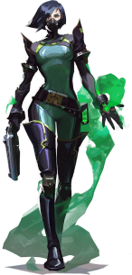

Aqui vamos apresentar um pouco do que são cadas agentes e o que cada um faz.
Começaremos pela viper
Viper, a química dos Estados Unidos, emprega uma variedade de dispositivos químicos venenosos para controlar o campo de batalha e prejudicar a visão do inimigo. Se as toxinas não matarem a presa, seus jogos mentais certamente o farão.
Representando a Coreia do Sul, sua terra natal, Jett tem um estilo de luta ágil e evasivo que permite que ela assuma riscos como ninguém. Ela corre em meio a qualquer confronto, cortando os inimigos antes mesmo que eles percebam quem ou o que os atingiu.